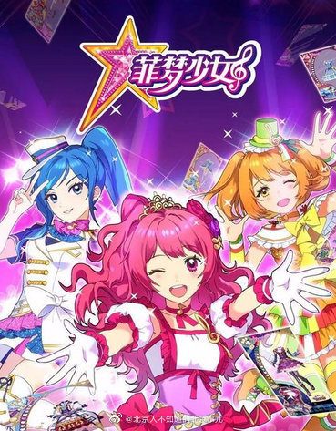
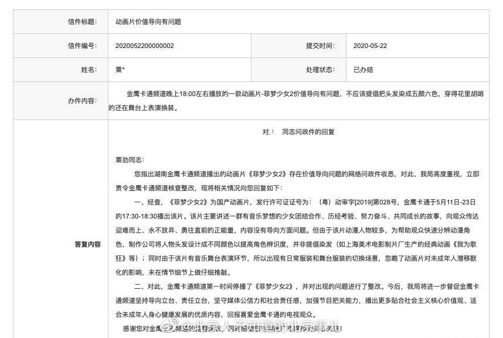
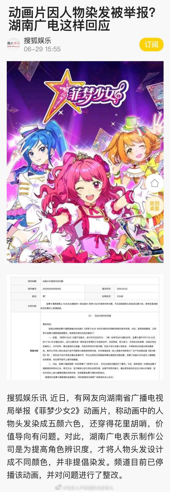

举报很正常，什么人都有。但是这样的举报居然受理了，然后要整改？@北京人不知道的北京事儿:【#动画片因人物染发被举报# 频道停播并对其整改】近日，有网友向湖南省广播电视局举报《菲梦少女2》动画片，称动画中的人物头发染成五颜六色，还穿得花里胡哨，价值导向有问题。对此，湖南广电表示制作公司是为提高角色辨识度，才将人物头发设计成不同颜色，并非提倡染发。频道目前已停播该动画，并对问题进行了整改。（by搜狐新闻）
 】近日，有网友向湖南省广播电视局举报《菲梦少女2》动画片，称动画中的人物头发染成五颜六色，还穿得花里胡哨，价值导向有问题。对此，湖南广电表示制作公司是为提高角色辨识度，才将人物头发设计成不同颜色，并非提倡染发。频道目前已停播该动画，并对问题进行了整改。（by搜狐新闻）
】近日，有网友向湖南省广播电视局举报《菲梦少女2》动画片，称动画中的人物头发染成五颜六色，还穿得花里胡哨，价值导向有问题。对此，湖南广电表示制作公司是为提高角色辨识度，才将人物头发设计成不同颜色，并非提倡染发。频道目前已停播该动画，并对问题进行了整改。（by搜狐新闻）